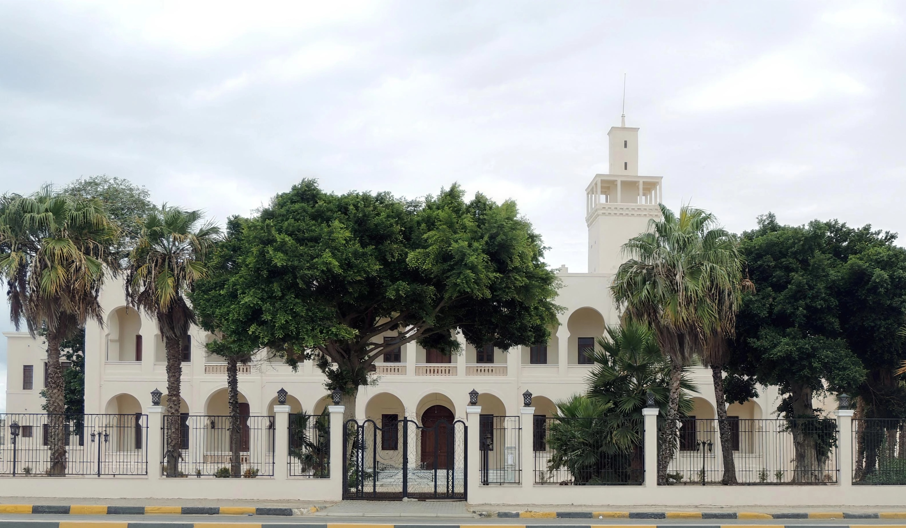
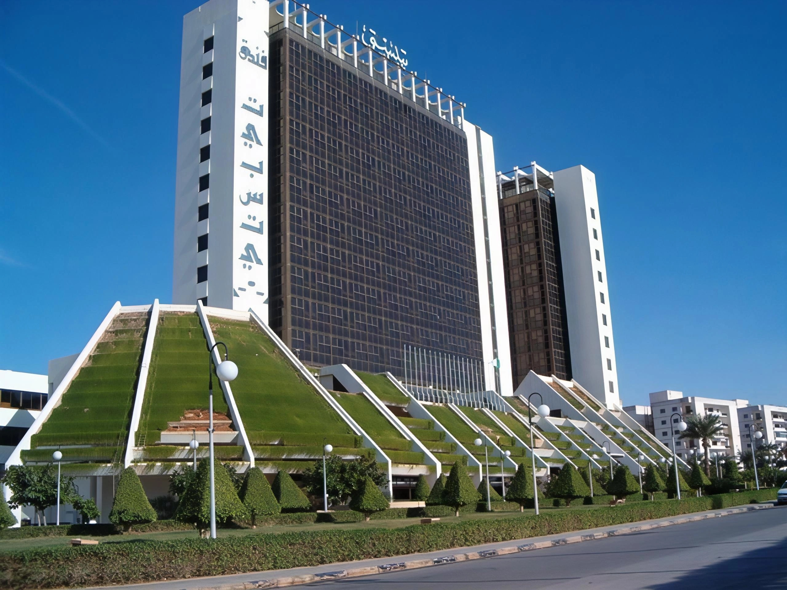

Benghazi
Libya's Mediterranean second city
Benghazi is Libya's second-largest city and the main urban centre of the eastern Cyrenaica region, with a history stretching back more than 2,500 years to the ancient Greek settlement of Euesperides. Long nicknamed "the mother of migrants" for its tradition of welcoming outsiders, Benghazi combines a Mediterranean waterfront corniche with layers of Greek, Ottoman, and Italian influence in its architecture. It also serves as the natural base for exploring the archaeological treasures of the Green Mountain region nearby.
Region
Cyrenaica
Distance from Tripoli
~1,000 km east
Known for
The corniche, gateway to Cyrene
Best for
Coastal walks, archaeology day trips
History of Benghazi
Benghazi's roots trace to the Greek colony of Euesperides, founded in the region during antiquity as one of the five cities of the Cyrenaican Pentapolis. Successive rulers, including Ottoman administrators and later Italian colonists, left their mark on the city's mosques, civic buildings, and grid of coastal boulevards. Many of Benghazi's older landmarks were damaged during the conflicts of its more recent history, so much of what visitors see today is a mix of restored Ottoman and Italian-era buildings alongside a modern, rebuilt city centre. Despite this turbulent past, Benghazi remains one of Libya's key cultural centres, home to Garyounis University (one of the country's oldest) and a long tradition of scholarship and civic life.
Top Things to Do in Benghazi
The Corniche
Benghazi's seafront promenade is the city's most popular gathering place, especially at sunset, with cafés and restaurants lining the walkway beside the Mediterranean.
The Old Lighthouse
A 1920s Italian colonial beacon that still stands as a symbol of the city's maritime heritage, offering photogenic views over the harbour.
Souq al-Jreed
A historic covered market in the older part of the city, good for browsing spices, textiles, and everyday Libyan craft goods.
Cyrene
A short drive from Benghazi lies one of North Africa's most important archaeological sites: the UNESCO-listed ancient Greek and Roman city of Cyrene, with its temples, theatre, and necropolis carved into the hills near modern Shahhat.
Old Town Hall
A 1924 civic building blending Moorish arches with Italianate details, located on the square that was once the city's colonial administrative heart.


Best Time to Visit & Getting There
Benghazi has a classic Mediterranean climate, so spring and autumn bring the most comfortable temperatures for walking the corniche and exploring the old town, while summers are hot and dry. Benina International Airport connects the city to the rest of Libya. Most visitors use Benghazi as a base for day trips into the Green Mountain (Jabal al Akhdar) to see Cyrene, Apollonia, and the region's cooler, forested highlands.
Benghazi rewards visitors who look past its recent headlines: a genuinely warm, historic Mediterranean city that also happens to be the easiest base for reaching some of the finest ancient ruins in the eastern Mediterranean.